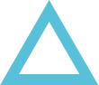

Добродії музею
«ДОБРОДІЇ МУЗЕЮ» — вільне об’єднання небайдужих українців з різних країн світу. Створене за ініціативи директорки музею Оксани Підсухи в 2015 році, об’єднання спрямоване на підтримку Музею української діаспори, сталий розвиток усіх напрямків його діяльності.
Фрагмент оновленої експозиції Музею української діаспори. Київ. 2021. Фото — Євген Генсюровський / Музей української діаспори
Музей української діаспори фінансується з бюджету міста Києва, який покриває лише базові потреби інституції – мінімальний фонд заробітної плати та комунальні витрати. Виставкові, освітні, видавничі та інші проєкти заклад втілює за кошти окремих меценатів, гранти та Міжнародного благодійного фонду світових українців “Діаспора”, створеного з метою підтримки діяльності музею.
Першою Добродійкою музею стала Катерина Кричевська-Росандіч (1926-2021), видатна українська та американська художниця, представниця знаменитої мистецької династії Кричевських. В останні роки життя Катерина Кричевська-Росандіч постійно підтримувала інституцію. Безцінним внеском до музейних фондів стала передана художницею колекція творів та архівних матеріалів Василя Гр., Василя Васильовича, Миколи Васильовича Кричевських, а також власних.
Катерина Кричевська-Росандіч у своїй майстерні. Маунтейн-В'ю. Каліфорнія. США. 2015. Музей української діаспори
Добродійка музею Катерина Кричевська-Росандіч, Драго Росандіч, директорка Музею української діаспори Оксана Підсуха. Маунтейн-вью, США. 2015. Музей української діаспори

У 2021 році за підтримки Добродіїв була створена оновлена експозиція Музею української діаспори. Значну допомогу в процесі створення експозиції надав співзасновник Міжнародного благодійного фонду світових українців «Діаспора» Віктор Капустін (Україна) та Благодійний фонд «Дар» в особі Майкла та Наталії Блейзерів (США). Родина Блейзерів фінансово підтримала також і видання науково-мистецького альбому «Микола Кричевський. Мистець і час», створеного командою Музею української діаспори в 2019 році.
Зліва направо: Валентина Подгорна, голова правління Благодійного фонду “ДАР”, Майкл Блейзер, президент інвестиційної компанії “SigmaBleyzer” та Наталія Блейзер, віце-президент інвестиційної компанії “SigmaBleyzer”. На відкритті виставки “Микола Кричевський. Мистець і світ” в Музеї української діаспори. 2018. Фото - Олександр Авраменко / Музей української діаспори
Зліва направо: кураторка виставк “Микола Кричевський. Мистець і світ” Ганна Лексіна, директорка Музею української діаспори Оксана Підсуха, Юлія та Василь Кричевські, Майкл Блейзер, президент інвестиційної компанії “SigmaBleyzer”, Наталія Блейзер, віце-президент інвестиційної компанії “SigmaBleyzer” та Валентина Подгорна, голова правління Благодійного фонду “ДАР”. На відкритті виставки “Микола Кричевський. Мистець і світ” в Музеї української діаспори. 2018. Фото - Олександр Авраменко / Музей української діаспори
Оксана Підсуха, директорка Музею української діаспори, та Віктор капустін, засновник Міжнародного благодійного фонду світових українців “Діаспора”. На відкритті виставки “Микола Кричевський. Мистець і світ” в Музеї української діаспори. 2018. Фото - Олександр Авраменко / Музей української діаспори

За фінансової підтримки родини Маркіяна Паславського (США) в 2019 році команда музею створила виставку «Нью-Йорк – Іловайськ: Вибір» (спільно з Національним музеєм Революції гідності), присвячену герою російсько-української війни Маркіяну Паславському. Експонати з цієї виставки після її завершення були передані в музейні фонди.
Відкриття виставки «Нью-Йорк – Іловайськ: Вибір» за участю і підтримки родини Маркіяна Паславського. Музей української діаспори. Київ. 17 серпня 2019 р. Фото — Богдан Пошивайло / Національний музей революції гідності
Фрагмент виставки «Нью-Йорк – Іловайськ: Вибір». Музей української діаспори. Київ. 2019. Фото — Богдан Пошивайло / Національний музей революції гідності
Музей української діаспори продовжує свою активну діяльність і під час повномасштабної війни, тож запрошує меценатів, колекціонерів та поціновувачів української історії й культури долучитися до спільноти Добродіїв музею і підтримати діяльність інституції. Музей та Міжнародний благодійний фонд світових українців “Діаспора” зобов’язуються звітувати перед Добродіями за отримані кошти.